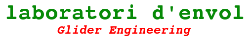
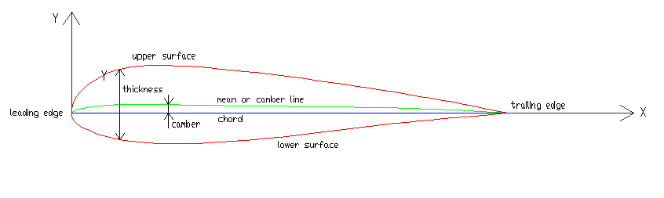
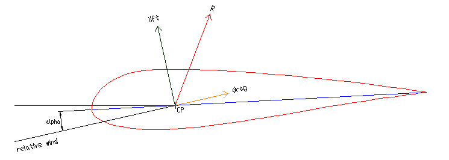
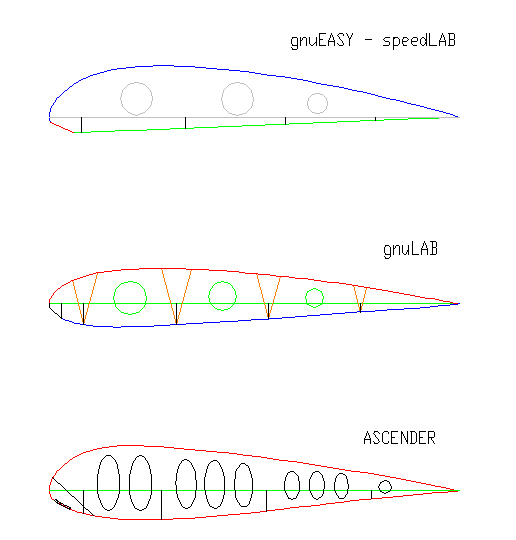
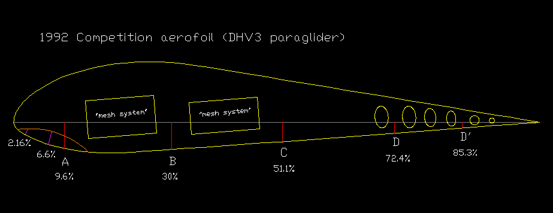
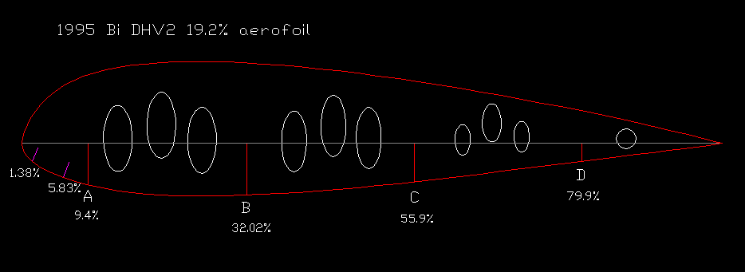

PARAGLIDER DESIGN HANDBOOK
CHAPTER 2. AEROFOILS
2.1
Introduction
2.2 Cylinder in an airflow
2.3
Joukowsky transformation
2.4
Airfoil geometry and parameters
2.5 Aerodynamic forces
2.6 NACA profiles
2.7 Paraglider airfoils
2.8 XFOIL program
2.9 XFLR5 program
2.10 AIrfoil fitting
2.1 Introduction
It is a fact of common experience
that a body in motion throught a fluid experiences a resultant force.
In most cases, is mainly a resistence to the motion. In the case of an
aerofoil the resultant force normal to the direction of motion is many
times grater than the component resisting the motion. The possibility
of the flight of the paraglider depends on the use of an aerofoil for
the wing structure.
2.2. Cylinder in an airflow
(...)
2.3. Joukowsky
transformation
The Joukowsky transformation converts a circle in an airfoil
section. Explained here.
2.4 Airfoil geometry and parameters
Airfoil geometry can be
characterized by the coordinates (x,y) of the upper and
lower surface, and the following:
- Leading edge
- Trailing edge
- Extrados
- Intrados
- Chord: line joining the centres of curvature of the leading anf
trailing edges.
- Mean or camber line
Geometric parameters that summarize the airfoil:
- maximum
thickness (% of chord)
- position of max thickness (% of chord)
- maximum camber (% of chord)
- position of max camber (% of chord)
- nose radius
- trailing edge angle

Fig. 2.1. Airfoil geometry
2.5 Aerodynamic forces
Angle of incidence: alpha
defined as the angle between the chord and the direction of motion
relative to the fluid
Resultant aerodynamic force:
resultant of the pressure distribution
The line of action of the resultant
aerodynamic force intersects the chord in a point CP center
of pressure
The resultant force is resolved into
two components:
The Lift
L at right angle to the direction of motion
The Drag D parallel to
direction of motion but opposing
Resultant moment
Its value depends of the reference point for moments. The sense is such
that a positive moment tends to increase the angle of incidence. Using
the leading edge A as a point of reference for moments the magnitude is:
M(A) = -CP · (L cos (alpha) +
D sin (alpha))
where CP is the
distance of the centre of pressure behind the leading edge of the chord
It
can
be shown that
there
is a point
on
the chord, for
which
the
aerodynamic
moment does
not vary with
the angle of
incidence.
dM/dalpha=0 This point
is
called
the aerodynamic
center AC and has been found
experimentally
and
theoretically
that
is
within a
quarter of
the
chord from the
edge.
Then assuming CP=AC+(CP-AC) = AC +
e ( e = distance
between
the
aerodynamic center and
center of
pressure )
For
small
alpha
values
and assuming L>>
D
can
be
simplified
as
follows:
M(A) = -CP ·
L or
M(A) = -(AC + e) · L =
-AC · L - e · L
By unitary chord AC=1/4 then
M(A) = - e · L - L/4
M(A) = M(AC) - L/4
M(AC) = moment
about
the
aerodynamic center (does
not vary with
the angle of
incidence)
For L = 0 ,
M(A)=M(AC)=M(0) (M(AC) =
constant with alpha)
Then
M(A) = M(0) - L/4
The
forces
and
moments
can
also be expressed
by
their
respective
lift,
drag, and moment coefficients:
L = Cl · (1/2) · rho
· V^2 · S
(rho air density, V= air speed, S = wing projected area)
D = Cd · (1/2) · rho
· V^2 · S
Cma = -CP · (Cl
cos (alpha) + Cd sin (alpha))
Cma = Cm0 - Cl/4
(Cmo = Cm at zero lift)
The
value and
sign
of
Cm0
has
an
important
role in the behavior
and
stability
of
the wing:
If Cmo<0 Cma will be more negative when alpha (Cl) increases, and CP
moves backward
If Cmo>0 Cma will be
positive for small alpha and CP moves forward
If Cm0=0 Cma follows Cl, and CP does not move located at a
quarter of
the
chord from the
leading edge
Cmo < 0 aerofoils will be called "unstable"
Cmo
> 0 aerofoils will be called "stable"
Cmo
< 0 aerofoils will be called "indiferent"
You
may use the three
types
of
Cm0 aerofoils in
paragliding. In
general, the
gliders
with
Cm0
<0 behave
in a more lively
and the easy
to
turn.
While whith
Cm> 0
we
have a more
stable wing, but
difficult
to
turn
(reflex airfoils). Depending
on
the use of
the
wing and its
performances
can
be used either
type. The
trend
is
to
use
profiles
Cm0
zero
or
slightly positive
on
the wings of
competition
to
temper
his
natural aggressive behavior. But
there is no fixed
rule on this issue.
The
overall
stability of
the
wing is controlled
by
the
position
of center of
gravity.
Should
be discussed in
another section.

Fig 2.2. Airfoil resultant
2.6 NACA profiles
The NACA aerofoils can be generated by the use of a set of
simple polynomial equations.
(...)
2.7 Paraglider aerofoils
The
paraglider
airfoils,
despite
being pressurized
fabric,
behave
like
the
rest
of
the gliders.
But
besides the
geometric
and
aerodynamic
parameters
described
above, the
following
are
also
interesting:
- Position of air
inlets
-
Position of
anchors
- Internal rib holes
Position
of air inlets: Must
ensure
the
air
entry
inside
the wing to
keep the pressure
inside
slightly
higher
than outside pressure. Can
be located by
theoretical
approaches, or
even
more frequent, by past
experiences. Air
intakes: 1% to 6% . Values in % of chord.
Position of anchors: It
has to do
with
the transmission of
loads to
the
inflated
structure.
Usual
place
from
5 to 2 anchorage points along
the
chord. As
normal
in
many
years
has
been
to
use 4 anchors "A",
"B", "C", "D". In
more
hight
AR competition wings,
may
be
used only 2
locations on
the chord, in
order to
reduce
drag.
The
position
of
these anchors
must
be determined experimentally and
from
previous
experiences. The
reduction of
anchors may
require
the
use of internal
reinforcements
to
secure the transmission
of
loads
over
a wide area.
Internal holes: The general
rule is, to distribute the holes to allow free air circulation between
cells, and at the same time maintaining structural strength of the rib.
| Example |
Max thickness |
Thickness
location |
Max camber |
Camber
location |
Inlet begin |
Inlet end |
Lo A |
Loc B |
Loc C |
Loc D |
1992 Comp
|
17.09
|
23.3
|
3.09
|
29.8
|
2.16
|
6.6
|
9.6
|
30
|
51.1
|
72.4-85.3
|
1995 Bi
|
19.19
|
24.3
|
2.06
|
21.9
|
1.38
|
5.83
|
9.4
|
32.02
|
55.9
|
79.9
|
gnuEASY
|
15.52 |
24.2 |
4.8 |
31.6 |
0.25 |
6 |
7.8 |
33.3 |
57.7 |
79.4 |
| gnuLAB1 |
14 |
21.4 |
1.83 |
39.6 |
0.12 |
3 |
8.5 |
31 |
53.5 |
75.8 |
| Ascender |
18 |
21.9 |
2.03 |
15.7 |
1.2 |
5 |
8.5 |
27.5 |
53 |
78.5 |
gnuLAB2
|
18 |
21.9 |
2.03 |
15.7 |
1.2 |
5.5 |
8.5 |
27.5 |
53 |
78.5 |
gnuLAB3
|
|
|
|
|
|
|
|
|
|
|
gnuA
|
20
|
|
|
|
|
|
|
|
|
|
gnuLAB4
|
|
|
|
|
|
|
|
|
|
|
gnuLAB5
|
|
|
|
|
|
|
|
|
|
|
Table 2.1 Paragliders airfoils. All values expresed in % of airfoil
chord

Fig 2.3 Paragliders airfoils

Fig 2.4: 1992 DHV-3 competition airfoil

Fig 2.5: 1995 Bi DHV-2 paraglider
Single skin airfoils
2.8 XFOIL program
XFOIL is an interactive program for the design and analysis of
subsonic isolated airfoils. It consists of a collection of menu driven
rutines which perform various useful functions such as:
- Analysis of an existing airfoil
- Airfoil design and redesign by interactive modification of surface
speed distributions
- Airfoil redesign by interactive modification of geometric parameters
- Plotting of geometry, pressure distributions, and multiple polars
XFOIL is released under GNU General Public License. The detailed
manual and the program can be obtained from the website: http://web.mit.edu/drela/Public/web/xfoil/
2.9 XFLR5 program
http://xflr5.sourceforge.net/xflr5.htm
2.10 AIrfoil fitting
LE
procedure to
obtain
the
paraglider
aerofoil of any
wing. Method
based
on
the
grid
ripstop
fabric.
Aerofoil fitting
index